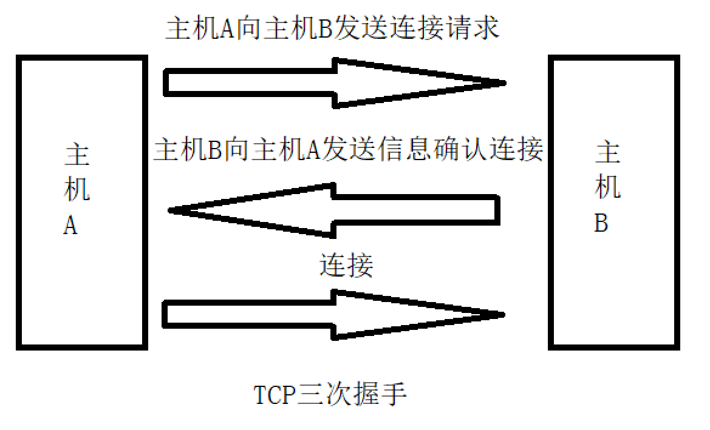

java网络编程
java网络编程
[toc]
计算机网络基本概念概述
什么是计算机网络
计算机网络就是将在不同地方的多台计算机连接起来，实现资源的传输、共享。
计算机网络三要素
协议
若计算机之间想要通讯，就必须遵循相同的协议。网络体系结构分为7层：应用层、表示层、会话层、传输层、网络层、数据链路层、物理层,，实际应用中一般分为5层(7层太过理想化，难以实现)：应用层、传输层、网络层、数据链路层、物理层。
应用层：负责将数据转换为二进制
传输层：负责将二进制封装成报文
网络层：负责报文分组
数据链路层：负责数字信号到电路信号的映射
物理层：发送数据
每一层都有协议来完成一些功能。比如应用层协议有：HTTP(超文本传输协议)、FTP(文件传输协议)、SMTP(邮件协议)；传输层协议有：TCP、UDP；网络层协议：IP。
UDP协议
UDP是面向无连接的不可靠协议。数据传输过程中可能会造成数据丢失。常用来发送一些不重要的数据，比如视频等。
TCP协议
TCP是面向连接的可靠协议，数据传输安全但相较于UDP协议来说传输效率慢。面向连接是指如果两台计算机进行通信，必须要3次握手。

ip地址
网络中用来标识一台主机。
端口号
用来标识一台主机上的进程。每一个进程的端口号都不能相同。
端口号有两个字节组成，数据范围从0到65535，其中1024之前的端口号用户不能自己分配使用，由计算机系统来分配使用。
一些常用的端口号：
- http协议：80
- mysql：3306
- tomcat：8080
注：这些只是默认端口号，端口号可以任意指定，只要不重复即可
windows中进程相关的代码
netstat -ano：查询所有进程信息
netstat -ano | findstr “端口号”：查询指定端口号进程
taskkill -f -pid 进程号：杀死指定进程
不同协议的端口号可以相同，比如一个UDP进程的端口号为1028，则TCP进程的端口号也可以为1028。
java实现网络编程
java网络编程相关类都被封装到【java.net.*】包下。实现网络编程的两个重要的类就是【java.net.Socket】和【java.net.ServerSocket】，使用Socket类我们就可以进行两台计算机之间的通信和数据共享。
Socket通过IO流来传输共享信息。
两个类都有IO异常，需要在编译前处理
java.net.Socket
Socket类布置在客户端，实现客户端的套接字(套接字就是两台计算机之间通信的端点，它包括IP地址和端口号)。
构造方法
Socket(InetAddress address, int port)：连接指定的服务器
常用方法
public InputStream getInputStream() throws IOException：获取网络输入流。用于接受服务器返回的数据。
public OutputStream getOutputStream() throws IOException：获取网络输出流。用于向服务器发送数据。
public void close() throws IOException：用于关闭套接字连接。
java.net.ServerSocket
ServerSocket类布置在服务器端，实现服务器端的套接字
构造方法
public ServerSocket(int port) throws IOException：实现服务器端的套接字，指定服务区端口号为port
常用方法
public Socket accept() throws IOException：获取连接服务器的套接字。服务器通过改对象获取的Socket对象来接受和向客户端发送数据。
public void shutdownOutput() throws IOException：关闭客户端的输出流，并在流的末尾加上结束标记，之前发送的数据正常发送。
下面用个小例子来熟悉这些基本方法的使用
服务器代码
1 | //1.创建服务器套接字，端口号为：1028 |
客户端代码
1 | //1.创建客户端套接字，服务器为 127.0.0.1:1028 |
写完代码后，我们需要先开启服务器，在运行客户端代码。
服务器输出：【客户端信息：你好服务器】
客户端输出：【服务器消息：收到信息】
需要注意的是，ServerSocket对象没有getInputStream()方法和getOutputStream()方法，我们需要用Socket对象的IO流对象来和客户端进行交互。
但是上述代码有个问题，服务器端只能接受一个客户端的消息，我们可以把上面的2-5步写到死循环里，这样只要我们不关闭服务器，服务器就会一直接受客户端的消息
服务器代码：
1 | //1.创建服务器套接字，端口号为：1028 |
需要注意的是，这里我们不需要在代码中写关闭服务器套接字的代码
经过改进后，我们的服务器已经可以处理多个客户端的信息，但是当客户端请求太多时，服务器可能处理压力大，这时候我们可以使用多线程来处理这个问题。
服务器代码：
1 | //1.创建服务器套接字，端口号为：1028 |
UDP通信
UDP通信的实现依靠【java.net.DatagramSocket】类来实现。
java.net.DatagramSocket
构造方法
public DatagramSocket() throws SocketException：建立套接字对象，端口号由操作系统随机分配(一般用于客户端建立对象)
public DatagramSocket(int port) throws SocketException：建立套接字对象并指定端口号(一般用于服务器端建立对象)
常用方法
public void connect(InetAddress address, int port)：记录服务器的IP地址和端口号，一般由客户端指定
public void disconnect()：清楚记录的服务器IP地址和端口号，一般由客户端指定
public void receive(DatagramPacket p) throws IOException：指定DatagramPacket对象接受数据
public void send(DatagramPacket p) throws IOException：发送DatagramPacket对象中的数据
public void close()：关闭套接字连接
java.net.DatagramPacket
DatagramSocket主要是客户端和服务器端的连接，DatagramPacket主要负责存储连接过程中产生的数据
构造方法
public DatagramPacket(byte[] buf,int length)：构造一个DatagramPacket用于接收长度的数据包length 。
length参数必须小于或等于buf.length 。
常用方法
public byte[] getData()：获取对象中存储的数据
public void setData(byte[] buf)：设置缓冲区中的数据
一个UDP通信的简单例子
服务器端
1 | //1.创建服务器端套接字，端口1028 |
客户端
1 | //1.建立客户端套接字 |
服务器端代码优化可以参考TCP通信代码示例。